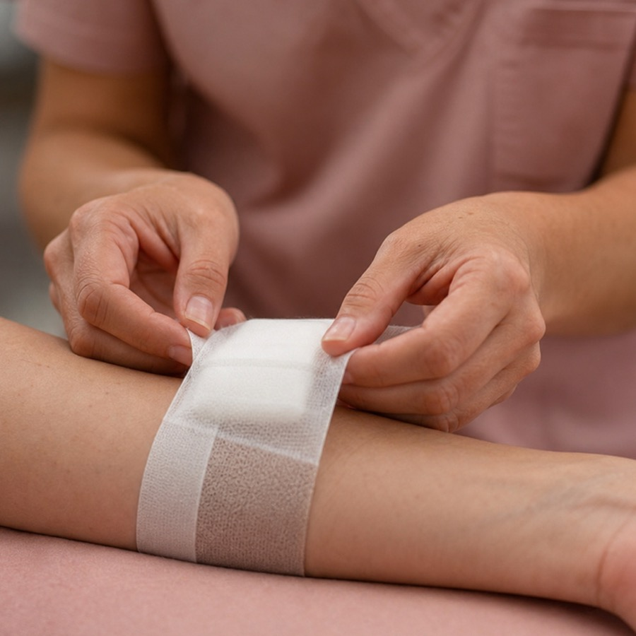
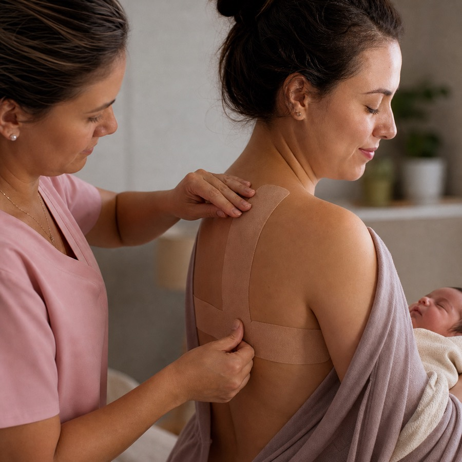
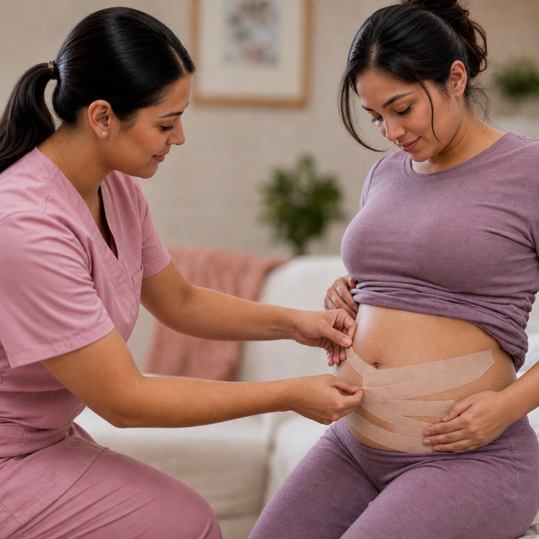

Enfermagem
Universidade de Fortaleza (Unifor), 2026.1.
COREN-CE 1005356-ENF
Autoridade que acolhe
Atendimento de enfermagem voltado à segurança, orientação e bem-estar de mães, bebês e famílias, com suporte especializado em amamentação, cuidados materno-infantis e procedimentos essenciais.
Atuação em consultoria e manejo da amamentação, cuidados materno-infantis, curativos simples e pós-cirúrgicos, administração segura de injetáveis e orientação para mães, bebês e famílias com excelência técnica, serenidade e sensibilidade.
Sobre
Enfermeira formada pela Universidade de Fortaleza (Unifor) em 2026.1, com foco de atuação em atendimento de enfermagem a domicílio em Fortaleza, cuidados materno-infantis, suporte neonatal, consultoria em amamentação, aplicação de bandagens, curativos, verificação de sinais vitais e administração de injetáveis.
COREN-CE 1005356-ENF
Baixar currículoCursos e formação
Universidade de Fortaleza (Unifor), 2026.1.
Instituto Práticas Seguras no Uso de Medicamentos, ISMP.
Centro Educacional Sete de Setembro, CESS.
Centro Educacional Sete de Setembro, CES, Brasil.
Cuidados na execução dos testes rápidos, Universidade Federal de Santa Catarina, UFSC.
Faculdade Famabe.
Faculdade Famabe.
Faculdade Famabe.
Serviços prestados
Acompanhamento de parâmetros essenciais para avaliação e orientação do cuidado.

Cuidado técnico com curativos conforme necessidade, indicação e avaliação profissional.
Atenção ao processo de recuperação, higiene, proteção da pele e sinais de alerta.
Aplicação com técnica, responsabilidade e orientação adequada para cada atendimento.

Suporte complementar para conforto, manejo e cuidado durante o processo de amamentação.
Orientação e acompanhamento para mães, bebês e famílias em momentos importantes da rotina de cuidado.
Apoio para pega, posicionamento, dúvidas frequentes e segurança emocional no aleitamento materno.

Atendimento voltado ao suporte corporal e ao bem-estar no período gestacional e pós-parto.
Entre em contato para tirar dúvidas e verificar como Paula pode orientar o melhor formato de cuidado.
Entrar em contatoMissão
Cuidado ético Atuação de enfermagem baseada em responsabilidade e boas práticas.
Acolhimento Escuta da história e das necessidades de cada mãe, bebê e família.
Segurança Orientação clara para reduzir dúvidas, ansiedade e riscos no cuidado.
Princípios
Escuta Atendimento atento ao contexto de cada paciente.
Segurança Orientações responsáveis, organizadas e baseadas em técnica.
Humanização Presença profissional com respeito, delicadeza e empatia.
Contato
Faça contato pelo WhatsApp, telefone ou e-mail para tirar dúvidas, verificar disponibilidade e combinar o melhor formato de cuidado.
Iniciar conversa© 2026 Paula Feitosa. Todos os direitos reservados.